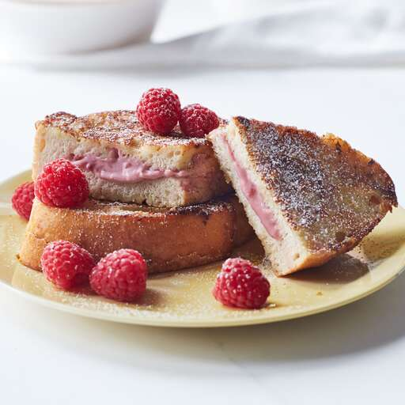

Baked Mac and Cheese

Description of Raspberry Cheesecake stuffed French toast
This is how you make Raspberry Cheesecake stuffed French toast
Ingredients
Raspberry Cheesecake stuffed French toast
- 1 cup milk
- 2 tablespoons vanilla extract
- 1 cup white sugar
- 2 tablespoons cinnamon
- 4 eggs, beaten
- 1 cup raspberry puree
- 4 ounces cream cheese, softened
- 1 loaf French bread, cut into 1 inch slices
- butter
- confectioners' sugar for dusting
- nutmeg, for topping
Directions
- In a bowl, whisk milk, vanilla, sugar, and cinnamon into the beaten eggs until well blended.
Set aside. In a separate bowl, cream together raspberry puree and cream cheese until smooth.
Make 'sandwiches' by cutting each slice of bread in half and spreading raspberry-cheese mixture in the center, then top with the other half.
- Melt butter over medium heat in a large skillet or griddle. Dip bread into egg mixture, coating thoroughly.
Cook until well-browned on both sides, about 5 minutes. Dust with confectioners' sugar and nutmeg. Serve immediately.